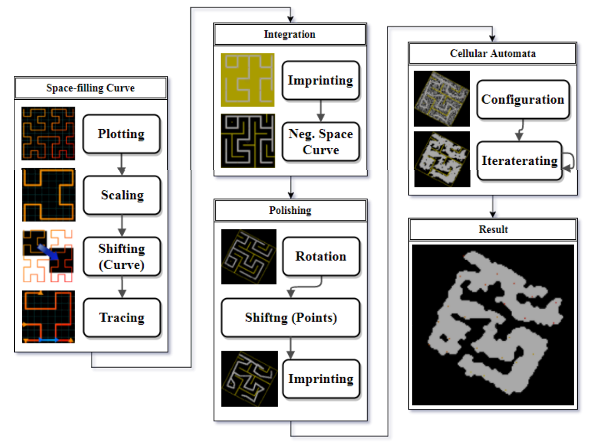

Document
Paper here!
Notes
My Own Notes
A Brief Summary
-
Abstract
- PCG and CA is a growing pair in gaming industry and academy.
- Games are becoming re-playable with PCG via infinite amount of levels.
- Space-filling curves here implemented with CA for mallable levels.
-
Introduction
- Big game companies have limited time, indie developers don't have the resources to hand-generate all levels. Thus, PCG has gained importance over time.
- PCG is a trade-off between re-playability, control and resources.
-
Background
-
Cellular Automata
- Multi-Layered CA: A set of CA that feeds on each others' outputs.
- Synchronous vs. Asynchronous Updating: One is freeze-then-update, other is update cell-by-cell.
-
Space-Filling Curves
- Curves whose range contains all the achievable space within a discrete n-dimensional space.
- A thread that visits every cell exactly once. Hilbert curves is one of them.
-
Methodology
-
Cellular Automata
- An NxM grid, true or false states, r=1 Moore neighborhood.
- 4 neighbors are true -> No change to state
- 4+ neighbors are true -> Change to true
- 4- neighbors are true -> Change to false
- Plot: Generate a Hilbert Curve even if M != N with respect to a, where a = MAX(M, N)
- Scale: Rescaling Hilbert Curve with an integer "1 < S < a"
- Shift: Choose a random NxM from all scaled S(NxM).
- Trace: Connect loose ends of the shifted curve to provide a connected curve.
- Imprint: Serve the grid to next step.
- Secure Negative Space: Create negative space curves, that shows movable space on the level.
- Rotate: Rotate the level with a certain angle. Do not let any part of the level disappear.
- Shift: You can warp lines, without breaking or moving out of cells.
- Iterate: Use CA on it to give it a different look.

Go back to the main page.